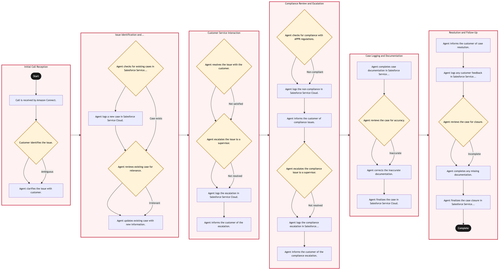

Updated 2026-08-20
Inbound Service Call Handling
Process flow
Click to zoom

Process steps
▼
Phase 1 — Initial Call Reception
3 steps
| Step | Activity | Role | System | Input | Output | KPI | Dec | Exc | Pain point |
|---|---|---|---|---|---|---|---|---|---|
| 1.1 | Call is received by Amazon Connect. | Customer Service Agent | Amazon ConnectA | Inbound call from customer | Customer identification and initial greeting | Average call wait time < 30 seconds | N | N | High call volume can lead to delays in agent availability. |
| 1.2 | Customer identifies the issue. | Customer Service Agent | Amazon ConnectA | Customer's verbal description of the issue | Issue summary and classification | Correct issue identification rate > 95% | Y | N | Customers may provide vague or ambiguous descriptions. |
| 1.3 | Agent clarifies the issue with customer. | Customer Service Agent | Amazon ConnectA | Customer's clarification | Detailed issue description | Clarification success rate > 80% | N | N | Time-consuming to clarify complex issues. |
▼
Phase 2 — Issue Identification and Classification
4 steps
| Step | Activity | Role | System | Input | Output | KPI | Dec | Exc | Pain point |
|---|---|---|---|---|---|---|---|---|---|
| 2.1 | Agent checks for existing cases in Salesforce Service Cloud. | Customer Service Agent | Salesforce Service CloudA | Customer's contact information and issue details | Search results from Salesforce | Case lookup accuracy > 90% | Y | N | Large volume of cases can slow down search times. |
| 2.2 | Agent logs a new case in Salesforce Service Cloud. | Customer Service Agent | Salesforce Service CloudA | Issue details and customer information | New case record | Case creation time < 2 minutes | N | N | Manual data entry can lead to errors. |
| 2.3 | Agent reviews existing case for relevance. | Customer Service Agent | Salesforce Service CloudA | Existing case details | Relevance assessment | Case relevance rate > 85% | Y | N | Similar cases may not provide accurate solutions. |
| 2.4 | Agent updates existing case with new information. | Customer Service Agent | Salesforce Service CloudA | New issue details and customer feedback | Updated case record | Case update time < 1 minute | N | N | Conflicts in case history can complicate resolution. |
▼
Phase 3 — Customer Service Interaction
4 steps
| Step | Activity | Role | System | Input | Output | KPI | Dec | Exc | Pain point |
|---|---|---|---|---|---|---|---|---|---|
| 3.1 | Agent resolves the issue with the customer. | Customer Service Agent | Amazon ConnectA | Issue details and available solutions | Resolution outcome | Customer satisfaction rate > 80% | Y | N | Customers may reject the proposed solution. |
| 3.2 | Agent escalates the issue to a supervisor. | Customer Service Supervisor | Amazon ConnectA | Issue details and customer feedback | Supervisor's decision | Escalation resolution time < 15 minutes | Y | N | Supervisors may not always be available for immediate escalation. |
| 3.3 | Agent logs the escalation in Salesforce Service Cloud. | Customer Service Agent | Salesforce Service CloudA | Escalation details and supervisor's feedback | Updated case record with escalation notes | Escalation logging time < 2 minutes | N | N | Manual updates can lead to inconsistencies. |
| 3.4 | Agent informs the customer of the escalation. | Customer Service Agent | Amazon ConnectA | Escalation details and expected resolution time | Customer acknowledgment | Customer acknowledgment rate > 90% | N | N | Customers may become frustrated with the delay. |
▼
Phase 4 — Compliance Review and Escalation
6 steps
| Step | Activity | Role | System | Input | Output | KPI | Dec | Exc | Pain point |
|---|---|---|---|---|---|---|---|---|---|
| 4.1 | Agent checks for compliance with APPR regulations. | Customer Service Agent | Salesforce Service CloudA | Issue details and relevant APPR sections | Compliance assessment | Compliance check accuracy > 95% | Y | N | Complex regulations can be difficult to interpret. |
| 4.2 | Agent logs the non-compliance in Salesforce Service Cloud. | Customer Service Agent | Salesforce Service CloudA | Non-compliance details and relevant APPR sections | Updated case record with compliance notes | Compliance logging time < 2 minutes | N | N | Manual updates can lead to inconsistencies. |
| 4.3 | Agent informs the customer of compliance issues. | Customer Service Agent | Amazon ConnectA | Compliance details and next steps | Customer acknowledgment | Customer acknowledgment rate > 90% | N | N | Customers may become frustrated with compliance issues. |
| 4.4 | Agent escalates the compliance issue to a supervisor. | Customer Service Supervisor | Amazon ConnectA | Compliance details and customer feedback | Supervisor's decision | Escalation resolution time < 15 minutes | Y | N | Supervisors may not always be available for immediate escalation. |
| 4.5 | Agent logs the compliance escalation in Salesforce Service Cloud. | Customer Service Agent | Salesforce Service CloudA | Escalation details and supervisor's feedback | Updated case record with escalation notes | Escalation logging time < 2 minutes | N | N | Manual updates can lead to inconsistencies. |
| 4.6 | Agent informs the customer of the compliance escalation. | Customer Service Agent | Amazon ConnectA | Escalation details and expected resolution time | Customer acknowledgment | Customer acknowledgment rate > 90% | N | N | Customers may become frustrated with the delay. |
▼
Phase 5 — Case Logging and Documentation
4 steps
| Step | Activity | Role | System | Input | Output | KPI | Dec | Exc | Pain point |
|---|---|---|---|---|---|---|---|---|---|
| 5.1 | Agent completes case documentation in Salesforce Service Cloud. | Customer Service Agent | Salesforce Service CloudA | Case details, resolution outcome, and customer feedback | Finalized case record | Documentation completion time < 3 minutes | N | N | Manual documentation can lead to errors. |
| 5.2 | Agent reviews the case for accuracy. | Customer Service Agent | Salesforce Service CloudA | Finalized case record | Review outcome | Case review accuracy > 95% | Y | N | Errors in documentation can lead to unresolved issues. |
| 5.3 | Agent corrects the inaccurate documentation. | Customer Service Agent | Salesforce Service CloudA | Correction details and new information | Updated case record | Correction time < 2 minutes | N | N | Manual corrections can be time-consuming. |
| 5.4 | Agent finalizes the case in Salesforce Service Cloud. | Customer Service Agent | Salesforce Service CloudA | Finalized case record | Case closure | Case closure time < 1 minute | N | N | Manual finalization can lead to delays. |
▼
Phase 6 — Resolution and Follow-Up
5 steps
| Step | Activity | Role | System | Input | Output | KPI | Dec | Exc | Pain point |
|---|---|---|---|---|---|---|---|---|---|
| 6.1 | Agent informs the customer of case resolution. | Customer Service Agent | Amazon ConnectA | Final resolution details and closure status | Customer acknowledgment | Customer acknowledgment rate > 90% | N | N | Customers may become frustrated with delays or misunderstand the outcome. |
| 6.2 | Agent logs any customer feedback in Salesforce Service Cloud. | Customer Service Agent | Salesforce Service CloudA | Customer feedback and satisfaction rating | Updated case record with feedback notes | Feedback logging time < 2 minutes | N | N | Manual feedback entry can lead to inconsistencies. |
| 6.3 | Agent reviews the case for closure. | Customer Service Agent | Salesforce Service CloudA | Finalized case record and customer feedback | Closure review outcome | Closure review accuracy > 95% | Y | N | Errors in closure can lead to unresolved issues. |
| 6.4 | Agent completes any missing documentation. | Customer Service Agent | Salesforce Service CloudA | Missing information and new details | Updated case record | Completion time < 2 minutes | N | N | Manual completion can be time-consuming. |
| 6.5 | Agent finalizes the case closure in Salesforce Service Cloud. | Customer Service Agent | Salesforce Service CloudA | Finalized case record | Case closure confirmation | Closure confirmation time < 1 minute | N | N | Manual finalization can lead to delays. |
Swim lanes
Customer Service Agent1.1 1.2 1.3 2.1 2.2 2.3 2.4 3.1 3.3 3.4 4.1 4.2 4.3 4.5 4.6 5.1 5.2 5.3 5.4 6.1 6.2 6.3 6.4 6.5
Customer Service Supervisor3.2 4.4
Systems touched
Amazon ConnectASalesforce Service CloudA
Key performance indicators
- Average call wait time < 30 seconds
- Correct issue identification rate > 95%
- Case lookup accuracy > 90%
- Customer satisfaction rate > 80%
- Compliance check accuracy > 95%
Risks and control points
- High call volume leading to agent burnout and reduced service quality.
- Errors in case documentation causing unresolved issues.
- Delays in escalation processes affecting customer satisfaction.
- Non-compliance with APPR regulations leading to further penalties.
- Manual data entry errors increasing operational costs.
Air Canada Process Wiki — process and systems reference compiled from public sources
for IT Application Management and User Support pre-sales discovery.
Built 2026-08-20. Every system carries an evidence tier: tier C is an industry pattern and tier U is an open
question, and neither should be asserted as fact about Air Canada without confirmation in discovery.
Not affiliated with or endorsed by Air Canada. Air Canada, Aeroplan and Altitude are trademarks of Air Canada.